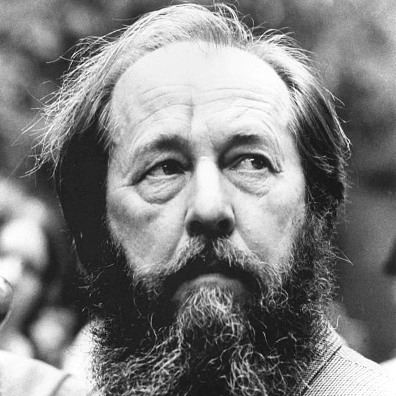

Солженицын Александр Исаевич
11 декабря 1918 г., Кисловодск — 3 августа 2008 г., Москва
Русский писатель, драматург, эссеист-публицист, поэт, общественный и
политический деятель. Участник Великой Отечественной войны, затем –
политзаключенный. Реабилитирован в 1956 году, впоследствии описал
репрессивную систему советских лагерей сталинской эпохи в романе
"Архипелаг ГУЛАГ". Лауреат Нобелевской "За нравственную силу,
почерпнутую в традиции великой русской литературы".